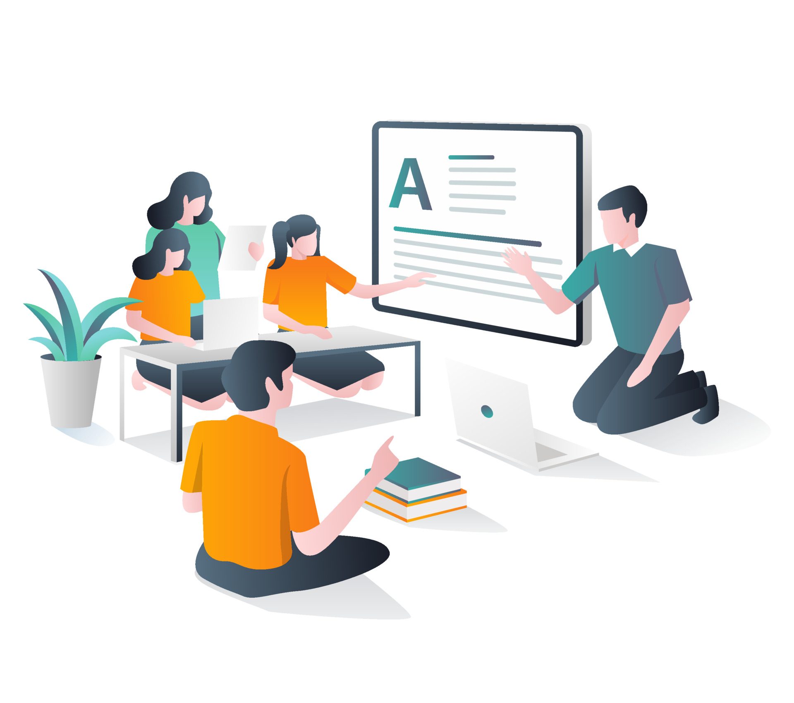
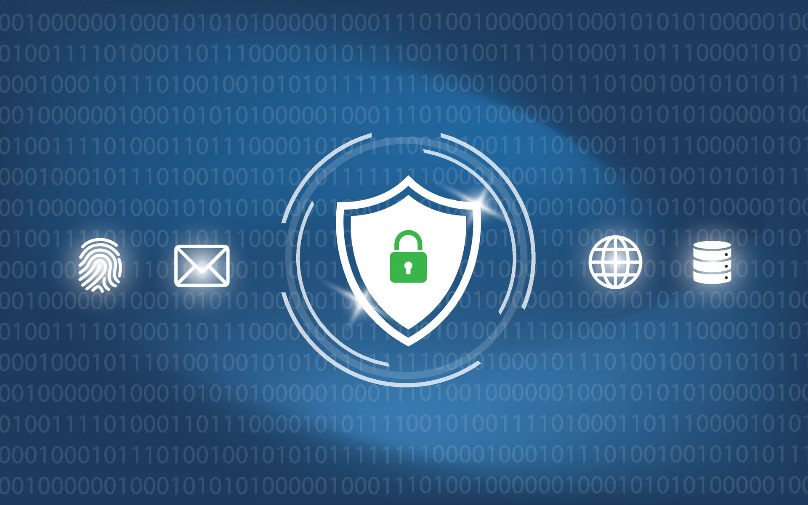

I am Kim Ordel, an aspiring Cybersecurity professional with a background in education. I originally followed a traditional education path, entering a bachelor’s program right out of high school and was lucky enough to be able to study abroad in Japan for a year. Studying abroad had a huge impact on me, it helped me grow up and learn to problem solve for myself since I was alone and far from home. I lived in a dorm with other international students from around the world and learned to appreciate different cultures and adapt. My school, Yokohama National University, provided us with many opportunities to learn about the culture and explore. I look back fondly on my time abroad as a foundational period that fundamentally reshaped my worldview. It was there I realized that I thrive when faced with the unknown, and that the most rewarding part of any challenge is the process of deconstructing it to find a way forward.
After returning and completing my initial degrees, I pursued a Master’s degree and once I completed it I started looking for a career. Originally I wanted to be a professor, however I found that I loved teaching more than research and publishing so I moved into education. It took me some time to find what I wanted to focus on in education, starting with social studies, then math and finally landing on special education. Working in special education taught me that no two problems are solved the same way; you have to be agile, empathetic, and persistent. During my time in special education I was able to work with some remarkable teachers and students that inspired me to push myself and invest in myself. Because of this I decided to trust and invest in myself to move to a career in Cybersecurity.
When I’m not diving into a new technical challenge, I’m usually still solving puzzles in other forms. I am an avid reader and history enthusiast, and I regularly visit local shops to play the Pokémon Trading Card Game with my brother. Whether it's theorizing a new TCG strategy, exploring a digital world in a video game, or watching anime, I am someone who simply loves to learn and engage with complex, creative systems. For me, Cybersecurity is the ultimate extension of that curiosity—the chance to protect others while solving the most challenging puzzles of all.
INSERT EDUCATION LIST HERE
As you can see my pathway to cybersecurity has not been linear, but the experience I have gained along the way has made me a better communicator, taught me to work with different types of people, provided experience and lessons in problem solving, and taught me appreciation of different cultures.
My academic journey began at San Diego State University (SDSU) where I majored in History with the goal of eventually becoming a history professor. My field of interest was pre-modern Japanese history. I have always been a hard worker, and my college experience shows this. I entered SDSU with over 30 credits already completed from high school because of AP exams and college equivalent classes. When I was accepted to SDSU I was given early acceptance and invited to join the University Honors Program, which is the only multi-disciplinary honors society at SDSU. This also meant that I had to take courses that were more rigorous, participate in events to support the program, study abroad, and write and defend an honors thesis. If I completed the program requirements my diploma would show that I had completed the program. Before I graduated they changed the program and created it as a minor called “Honors Interdisciplinary Studies” and when I graduated this was one of my two minors, the other being Japanese.
Being in this program challenged me, since I needed to study abroad I wanted to go to Japan, which is the history I was interested in. I worked hard to improve my language skills and prepare financially and mentally for studying abroad. I was also inspired to work towards other honors programs on campus including Phi Eta Sigma Freshman Honors Society and Golden Key International Honors Society. The History Department had its own honors program that required a thesis. I completed my thesis on the multi-causalities of the Pacific War and then expanded it and defended it for the University Honors Program.

After completing my bachelor’s I took a year off and researched and applied for Master’s programs. I was accepted to the University of Southern California’s East Asian Area Studies Department. I was lucky enough to be offered a teaching assistant position and gained experience running weekly break out sessions for students, testing review sessions, and grading assignments, midterms and finals. I learned a lot about research and technical writing, but I also learned that I preferred working with students.
After completing my Master’s from USC I worked in various roles in education including tutoring, substitute teaching, teaching assistant and special education. To move out of tutoring and substitute teaching I needed a credential, I still loved history so I wanted to teach social studies. I completed the single subject credential requirements and was given authorization for introductory Japanese as well. I found a job as a teaching assistant but there were not many openings in social studies, so I worked to add foundational mathematics authorization, which would allow me to teach any math class except calculus. I completed the assessments right when the schools shut down for Covid. At this point I decided to pivot to Special Education as there were more opportunities and I had been working with many special education students as a teaching assistant and enjoyed it. During Covid I was an intern teacher while I took classes to get my credential for special education.

After years of working with some remarkable teachers and students I decided to follow the advice I gave my students, and work towards goals. While I loved the impact of education, the lack of work-life balance and my desire for a more technical challenge led me to start the journey I’m on now. I chose to invest in myself and transition into Cybersecurity, a field that allows me to use my analytical background to solve a different kind of puzzle.
In the spring of 2024, I began focusing on professional Cybersecurity skills. I moved from building a strong independent knowledge base to mastering the technical tools and methodologies used by enterprise red teams. At this point I was “tech curious” but unsure of my path forward. I began with focusing on coding languages, starting with Python but later expanding to Java, HTML, and CSS.
One thing I always teach my students is to make a plan. Research and break the problem down into pieces that you can then create tasks and complete. I began by looking at jobs that sounded interesting and would provide financial stability and the option of career growth. The first jobs that caught my eye were software developing jobs, and I noticed that they all required experience or a bachelor’s in a related field such as Computer Science or Cybersecurity. As I became more confident in my coding skills and expanded to some of the theoretical lessons on learning platforms I felt that computer science was a field I could grow in and thrive.
However, I was working full-time and needed to keep my job while balancing my studies. While researching schools that could fit my schedule, and limited budget, I found University of the People. It checked all the boxes, it was tuition free, had a Computer Science degree, and online classes. They also accepted transfer credits and I was able to gain a lot of credits using my previous studies.

While taking classes I continued to use independent study programs to grow my skills. During this time I came across cybersecurity professionals discussing the state of the field and describing the importance of their jobs. Their talks resonated with me and I looked into the types of jobs available in cybersecurity. Before this, I felt that cybersecurity was too overwhelming and difficult, but I realized that there are many tools to help and that there exists different roles to allow us to specialize and provide better overall security. What really piqued my interest was red teaming and pentesting because they focused on using our skills, with permission and oversight, to check protections for companies to help protect them. I have always loved problem solving and mysteries, and these jobs piqued my interest. I began to look into them further, and found TryHackMe, Hack the Box, Portswigger, and more. In Spring of 2026 I completed my studies at University of the People and moved my focus to certifications, learning different tools and methodologies, and building a strong portfolio. You can see my work in the training and projects section of this portfolio.
While my career path has been non-traditional it has taught me a wide variety of skills that make me an excellent professional. Beyond technical proficiency, my career has been built on a foundation of high-stakes communication and problem-solving. Living abroad taught me how to communicate with different people, respect other cultures and adapt. Living and working abroad required a high degree of resilience and adaptability, allowing me to thrive in unfamiliar and challenging environments. I made friends that I will have for life, and experiences that help me with problem solving and communicating.
My time in academia taught me research skills and how to work on large projects that stretch months or years. It instilled in me a drive to learn skills and push myself. In my second year as a teaching assistant the professor gave all of the teaching assistants the opportunity to create a lecture and present it to the entire class as a guest lecturer. I was the only teaching assistant that took him up on the offer and I spoke in front of 150+ students even though public speaking makes me nervous. I saw this as an opportunity to gain experience and make an impression. Not every teaching assistant gets to design their own lesson and teach it, and I wanted to show that I could create an engaging lesson and overcome my nerves. The time spent on research for my classes as well as my Master’s thesis taught me invaluable skills in meticulous documentation and organizing complex data and writing technical papers. I learned valuable project management skills as well such as breaking my tasks into manageable chunks, coming up with backup plans if the sources I was hoping to find for my research were unavailable, and communicating with professors and librarians about project updates and locating necessary materials.
My time in K-12 education also taught me a lot. I believe that being able to work with K-12 taught me a great deal about communication and working with others. I learned that students vary not only in each class but in each grade, and learned how to adapt my communication style and teaching to the grade level and student. This will provide invaluable skills in red teaming as I will be able to adapt and explain technical information even to those that are not used to the technical jargon.
My time as an educational specialist has been influential in my professional development, providing me with a wide breadth of experience in problem-solving and rapid adaptation. Unlike a traditional classroom setting, I provided specialized support across multiple grade levels simultaneously. This required constant "on-the-fly" problem-solving to meet the needs of diverse students in real-time.
Beyond being a teacher I also served as a case manager responsible for Individualized Education Plans (IEPs). These are complex legal documents with strict annual requirements and rigid deadlines. Managing these involved high-level organization, as the regulations changed yearly and every student's team consisted of different members, requiring constant professional development to remain compliant. Because a team of specialists—such as speech therapists, psychologists, and occupational therapists—works with each student, I was responsible for project-managing the entire group, and every student had a different team and different goals and concerns to focus on. I tracked requirements for goals as well as progress at grade level and state assessments, ensured each specialist completed their assessments, and coordinated their contributions for final reports.
I was also responsible for leading the meetings, where I acted as the primary point of contact for both parents and professionals. This involved managing the agenda, translating complex information into understandable terms, and keeping the team on a strict schedule while simultaneously taking meticulous notes to ensure legal documentation was updated correctly. My skills in communication, documentation, and managing multi-stakeholder meetings have improved every year. These skills translate directly to Cybersecurity: I am prepared to track project components, communicate effectively with technical teams, and provide clear, documented updates for stakeholder meetings. Because of my background in education I can create presentations for team updates, education materials for non-security personnel training and presentations of findings for stakeholder meetings.
Since deciding to pivot into Cybersecurity, I have been working hard to build the technical skills necessary to be a strong candidate. I completed my bachelor’s in Computer Science in the Spring of 2026 and have since focused on completing credentials and individual study programs to develop field-specific expertise.
Through my degree and self-study, I have become proficient in Python, Java, HTML, CSS, and SQL. This foundational knowledge allows me to better understand how attacks are executed and helps me identify specific vulnerabilities within code. I am currently applying these skills in hands-on environments like TryHackMe and Hack The Box to bridge the gap between theoretical computer science and active offensive security.
I decided to focus on Cybersecurity in late 2025 and began technical training in 2026. Currently, I have completed the first assessment (Core 1) for CompTIA A+ and am working on the second assessment (Core 2). My goal is to follow up with Security+ once I complete the A+. Since January, I have been working tirelessly on TryHackMe, TCM, Hack The Box, Portswigger, and other self-study programs to gain skills for pentesting and red teaming.
It is important for me to have a strong foundation to build off of, so I took the time to complete the TryHackMe Pre-Security and Cybersecurity 101 certificates. These helped me master virtual machine management and fundamental theory, such as the CIA Triad. Understanding these principles is vital to guide my testing and analyze how attackers compromise systems. I have applied this by learning how to use SSH to access remote accounts, understanding and monitoring network ports, and utilizing HTTP GET and POST requests to interact with web services.
For the last few years, AI has been transforming the landscape of all IT sectors, including Cybersecurity. I have dedicated significant time to focusing on AI security challenges, spanning both ethical hacking and defensive practices. While this topic is incredibly fluid, I am building a robust knowledge base to stay ahead of emerging threats. In April 2026, I completed the TryHackMe AI Security certificate, and I have spent extensive hours on Lakera’s Gandalf challenge, learning to exploit vulnerabilities like prompt injection, role-playing, and jailbreaking. This hands-on practice has been essential for understanding how LLM-based applications can be manipulated and how to implement effective guardrails.
I am currently working on the Junior Penetration Tester learning path for TryHackMe and have gained invaluable skills for my career. Through the virtual labs, I have learned how to use Burp Suite to not only scan HTTP traffic but to manipulate it as well using the Repeater. These skills are essential for identifying and exploiting vulnerabilities within the OWASP Top 10, such as Injection and Broken Access Control, which is a vital capability in any testing situation.
Looking ahead, I am focused on consistently expanding my expertise within the field. I am currently completing the final modules of the Junior Penetration Tester path on TryHackMe and plan to transition into advanced specialized tracks immediately after. To continue challenging myself, I have begun participating in Capture the Flag (CTF) challenges, both individually and as part of a team.
In addition, I am documenting my progress through technical blogging. As an educator, I have learned that reflection is essential for identifying where we struggle and what we have truly mastered; this process allows me to adapt and refine my technical skills. I am also a proud member of Women in Cybersecurity (WiCyS), where I engage with the community to stay informed on industry trends and best practices. My commitment to continuous self-study and professional networking ensures that I remain a proactive and informed asset in the ever-evolving Cybersecurity landscape.